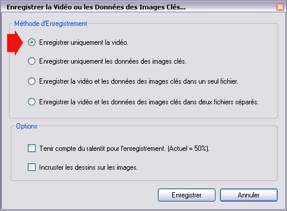
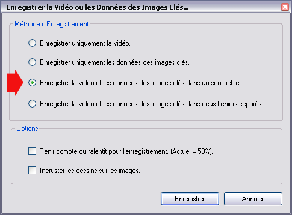

Sauvegarder des Séquences Vidéos
Sauvegarder une vidéo,
Formats et Codecs Utilisés,
Intégrer les données des Images Clés.
1. Sauvegarder une vidéo
Vous pouvez à tout moment sauvegarder la Zone de Travail courante dans une nouvelle vidéo.
Utilisez le menu Fichier > Enregistrez la Vidéo ou les Données des
Images Clés.
Choisissez l'option "Enregistrer uniquement la vidéo".

Si
vous souhaitez que la vidéo résultante soit jouée au ralentit courant,
cochez la case "Tenir compte du ralentit pour l'enregistrement."
Attention,
à partir d'un certain niveau de ralentit (environ 20%) le fichier
résultant peut devenir de plus en plus volumineux.
2. Formats et Codecs Utilisés
Un
format est une enveloppe contenant les données compressées de la vidéo.
Un codec est une technique de compression permettant de réduire la
taille des données.
Les formats utilisés dans Kinovea :
- MKV (Matroska). C'est le format par défaut.
C'est un format extrêmement souple d'un point de vue technique et dont l'implémentation est libre.
Un certain nombre de logiciels de lecture peuvent jouer les fichiers MKV nativement. (VLC, MPlayer)
Pour les autres logiciels (Media Player Classic, Windows Media Player, etc.) installez un filtre dédié comme le CCCP.
- MP4 (MPEG4-Part14).
- AVI.
Les codecs utilisés dans Kinovea :
Dans sa version actuelle, Kinovea compresse toutes les vidéos à l'aide d'un codec MPEG4-ASP. (Compatible DivX / Xvid).
3. Intégrer les données des Images Clés.
Pour
faciliter le partage des vidéos et des données d'analyse (Images Clés,
Commentaires, Dessins) l'option de stocker ces données avec la vidéo
est proposée.
Utilisez le menu Fichier > Enregistrez la Vidéo ou les Données des
Images Clés.
Choisissez l'option "Enregistrer la vidéo et les données des images clés dans un seul fichier".

Les données des Images Clés sont alors enregistrées aux côté des Images, sans que les dessins ne soient incrustés sur celles-ci.
Vous pouvez rouvrir le fichier dans Kinovea et modifier les dessins et commentaires.
Si vous souhaitez ouvrir le fichier résultant dans un autre logiciel, seules les images originales seront visibles.
Les vidéos enregistrées dans ce mode seront au format .MKV.